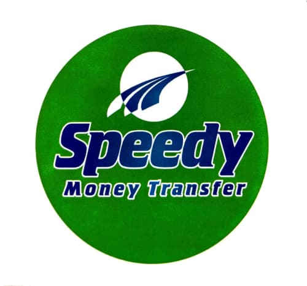
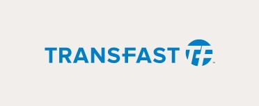
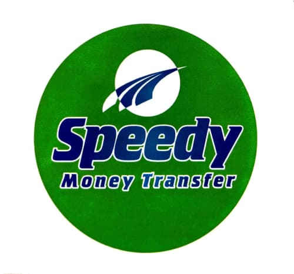
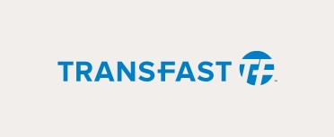

Fast and easy money transfer, locally and globally.
Make local and cross-border payments with GCB money transfer services. Transfer funds across Ghana, Africa and the world quickly, with minimum paperwork or hassle.
International Money Transfer
GCB partners with several of the world's most popular money transfer services.
Money Transfer Operators
GCB has partnered with leading international operators to give you worldwide coverage and convenience, including:
 



Outbound Transfers
Transfer of funds for Personal or Business purposes via SWIFT same day.Benefits
A reliable, safe and fast way to receive funds from abroad. Available to GCB customers and non-customers. Prompt delivery of funds. Accessed with code provided by the sender. Funds accessible through over 157 branches countrywide.Inwards Transfer
No matter where you need to send or receive cash in the world, GCB has a solution for you. We partner with a wide range of money transfer organisations and correspondent banks outside Ghana, to give you the convenience of international transfers.GCB Xpress Money Transfer
Transfer money between any two GCB branches in seconds.
Ideal for small businesses and traders, families and parents of children in higher education, GCB Xpress money transfer allows electronic transfer of funds across Ghana instantly, with total security, whether you are a GCB customer or not.
GCB Xpress Money Transfer
Transfer money between any two GCB branches in seconds.
Ideal for small businesses and traders, families and parents of children in higher education, GCB Xpress money transfer allows electronic transfer of funds across Ghana instantly, with total security, whether you are a GCB customer or not.
GCB Xpress Benefits
- Available to GCB customers and non-customers.
- Real time delivery of funds.
- Convenient and easy..
- Safer than carrying cash.
- Secure code as proof of transfer..
- Highly competitive rates..
- Large branch network across the country..
Sending a Transfer
Simply visit any GCB branch with a valid identity card (passport /driver's license / voter ID). Fill out an Xpress transfer form and hand it to the customer service representative. You will be provided with a receipt and secure code as proof of transfer.Receiving a Transfer
Visit the specified GCB Branch with your valid identity card (Passport /Driver's License / Voter ID) and the secure code received from the sender. Fill out the Xpress receiver form and hand it to the customer service representative to receive the funds.Other Money Transfer
Flexible transfer options for businesses and individualsEnjoy access to GCB's large network of branches and you will be assured that funds are at the disposal of the beneficiary as quickly as possible. We can accept payment instructions prior to the value date and execute them on a specified future date or even on a regular basis if required.
Easy remittance options
At GCB, local and international remittances are handled both efficiently and cost-effectively for individual and corporate beneficiaries around the world. You can also make transfers between your own accounts through:
GCB internet Banking
GCB Branches
Transfers to a GCB account holder or to an account at any other bank in Ghana are made in Ghana Cedis subjected to applicable rules and limits. Some restrictions apply. Please check with your branch or customer service.